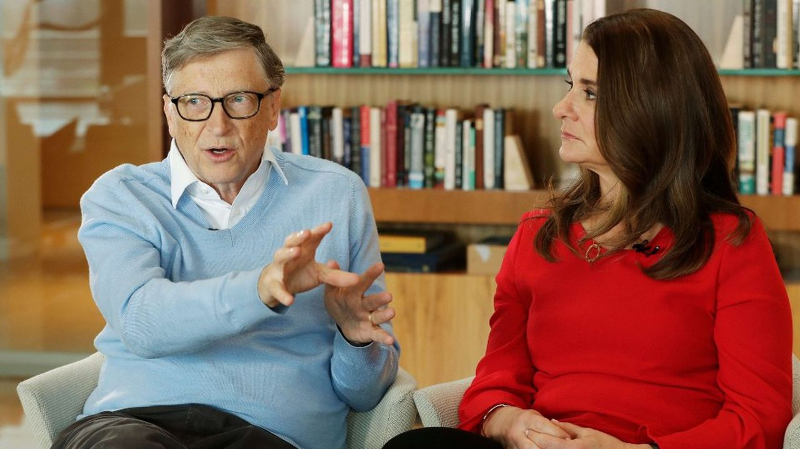

Bill Gates
I-Biographie courte de Bill Gates
Né le 28 octobre 1955 à Seattle aux États-Unis, Bill Gates est un informaticien devenu, grâce à son génie, l'un des hommes les plus riches au monde.
Précurseur dans le domaine de la micro-informatique, Bill Gates, ou William Henry Gates III de son nom de baptême, crée la société Microcomputer Software, avec son ami Paul Allen, alors qu'il n'a que 20 ans.
Quelques années plus tard, l'entreprise devient Microsoft. Les deux comparses font fortune grâce à l'invention du premier langage de programmation qui fonctionne sur un ordinateur commercial.
La société IBM sera la première à entrevoir les perspectives de cette invention et passera un accord avec Bill Gates pour que Microsoft crée un système d'exploitation.
Dès lors, les deux fondateurs n'ont de cesse d'innover, devenant incontournables et livrant une guerre sans merci à leur principal concurrent Steve Jobs, fondateur d'Apple. En 1986, Bill Gates devient milliardaire alors que sa société fait son apparition en bourse.
En 2011, les estimations portent à près de 56 milliards de dollars la fortune personnelle de l'informaticien. Côté vie sentimentale, Bill Gates semble être un homme comblé. Marié depuis 1994 à Melinda French, responsable du marketing de Microsoft
À partir de 2008, il consacre la majeure partie de son temps à ses oeuvres caritatives de la Fondation Gates, créée en 2000 avec sa femme Melinda Gates, à laquelle il est marié depuis 1994. Cette structure a pour mission d'offrir à la planète des innovations dans le domaine de la santé et dans l'accès à la connaissance.

Suivant
Retour Accueil